Практичний досвід · журнал «ДентАрт» 2021 №1
Повторне ендодонтичне лікування зубів зі складною анатомією кореневої системи
ENDODONTIC RETREATMENT OF THE TEETH WITH A COMPLEX ROOT SYSTEM ANATOMY
Сучасний підхід до ендодонтичного лікування зубів ґрунтується на оптимальному очищенні, дезінфекції та якісній обтурації системи кореневих каналів. Анатомію кореневої системи вважають основним елементом, що впливає на процес загоєння, тому клініцист повинен знати про всі нормальні, можливі та аномальні варіації анатомії зубів для досягнення максимального клінічного успіху. Часто зустрічаються як премоляри, так і моляри зі складними клінічними відхиленнями.
Трохи статистики. Другий премоляр верхньої щелепи може мати від 1-го до 3-х коренів: з одним кореневим каналом у 75-96% випадків, з двома кореневими каналами у 4-24% і з трьома кореневими каналами в 0-1%. Перший моляр верхньої щелепи може мати три корені: піднебінний корінь – з одним кореневим каналом у 60-100%, з двома кореневими каналами у 33-0%, дистально-щічний корінь – з одним кореневим каналом у 83-100%, з двома кореневими каналами у 17-0%, медіально-щічний корінь – з одним кореневим каналом у 11-85%, з двома кореневими каналами у 87-13% і з трьома кореневими каналами у 2% випадків.
Ми опишемо клінічне лікування, звертаючи особливу увагу на фактори, важливі для виявлення кореневих каналів: інтерпретацію передопераційних рентгенологічних знімків, даних конусно-променевої комп'ютерної томографії (КПКТ), ретельне обстеження дна порожнини зуба, жолобків і перешийків між устями кореневих каналів, пошук симетрії усть кореневих каналів, тестування з активацією розчину гіпохлориту натрію і спостереження за утворенням пухирців, візуалізацію місця кровоточивості каналів (Vertucci, 2005).3,4
Клінічний приклад 1
Пацієнта, 37 років, направили на повторне ендодонтичне лікування зуба 25. Повідомив про наявність «кісти» після того, як була зроблена інтраоральна рентгенограма зуба 25 у клініці, куди він звернувся для заміни мостоподібного протеза, і опісля був направлений до нас. Скарг на момент звернення не було (фото 1).
При огляді ротової порожнини виявлено металокерамічний міст з опорою на зуби 25-27. Передопераційна рентгенограма показала наявність неспроможної обтурації кореневої системи і радіолюцентну ділянку в проєкції щічного кореня.
На щастя, трикореневі конфігурації можна практично завжди побачити на передопераційних рентгенограмах. Основне правило для виявлення трикореневих верхньощелепних премолярів на передопераційних рентгенограмах у прямій проєкції полягає в тому, що коли медіально-дистальна ширина зображення на середині кореня має вигляд рівної або більшої, ніж медіально-дистальна ширина зображення коронкової частини, то зуб, найімовірніше, має три корені. Ця порада є гарною візуальною підказкою, але не завжди має абсолютне значення (Sieraski і співавт.,1989).1
Що ж до морфології, то найбільш поширені три основні категорії трикореневих верхньощелепних премолярів:
- категорія перша: зрощення усіх трьох коренів або двох щічних, а також наполовину зрощений або окремий піднебінний корінь;
- категорія друга: звичайне розділення щічних коренів у середній третині або в апікальній третині наполовину зрощеним або окремим піднебінним коренем;
- категорія третя: нормальне розділення щічних коренів у цервікальній частині з окремим піднебінним коренем, класичної форми у вигляді «триноги».
Наш приклад досить непростий – з точки зору анатомічної будови, ми маємо справу з морфологією першої категорії верхньощелепного премоляра (зрощення щічних коренів і окремий піднебінний).
Діагноз: асимптоматичний апікальний періодонтит зуба 25.
Лікування: інфільтраційна анестезія 4%-1/200000 Ubistesin (3M), ізоляція ділянки в техніці роздільної фіксації рабердаму, так званий спліт-дам (split-dam) (фото 3).
Циліндричним алмазним бором S6856.314.016 (Komet) видалили керамічне облицювання і бором H34L.314.012 (Komet) для розрізування металу розрізали коронки (фото 4).
Після цього конструкцію збили автоматичним коронкозбивачем SafeRelax (Anthoghyr) (фото 5). Зробили і повноцінну ізоляцію зуба 25.
Відкорегували доступ до усть кореневих каналів, прибравши стару композитну пломбу, дах порожнини зуба і муміфіковану коронкову пульпу (фото 6).
Роблячи рясну іригацію грітим гіпохлоритом натрію і за допомогою операційного мікроскопа Zumax 2350 (Zumax Medical) вдалося ідентифікувати устя піднебінного і щічного кореневих каналів: у щічному корені ідентифіковано глибокий поділ (split) на медіально-щічний і дистально-щічний кореневий канали відповідно. У процесі первинного проходження кореневих каналів (scouting) K-file 06.02-15.02 (Dentsply Sirona) довелося зіткнутися з такими проблемами:
- сходинка (Ledge) у медіально-щічному кореневому каналі;
- сходинка (Ledge) у піднебінному кореневому каналі;
- непрохідність у дистально-щічному кореневому каналі, оскільки зупинилися на позначці апекс-локатора RayPex 5 (VDW) 1.0-1.2 (фото 7, 8).
Прицільну рентгенограму зуба 25 зроблено, щоб оцінити якість проходження сходинок у медіально-щічному і піднебінному кореневих каналах.
Рентгенологічний контроль (фото 9) виконаної роботи, прохідності на повну робочу довжину ми так і не отримали в системі кореневих каналів щічного кореня – «недохід» становив 1,0-1,2 мм відповідно.
Для створення «килимової доріжки» використані ротаційні файли NT2 (Poldent) 15.02, 20.02. Етап препарування кореневих каналів був виконаний E3 Azure (Poldent), а інструмент, яким закінчили препарування, – Master Apical File (MAF):
- у медіально-щічному каналі – 30.04 робоча довжина становила 17,0 мм;
- у дистально-щічному – 30.04 робоча довжина становила 17,5 мм;
- у піднебінному – 35.04 робоча довжина становила 18,0 мм.
Кожен етап заміни файла супроводжувався іригацією свіжою рясною порцією гіпохлориту натрію 5,25% Chlorax (Cerkamed). На фінішній стадії іригації використано GentleFilе (MedicNRG), з якого за власною модифікацією була отримана щітка GentleBrush, і при 5000 об/хв це чудовий спосіб активації розчину в кореневому каналі. Також використана насадка Eddy (VDW). Діяли на змазаний шар 17% розчином EDTA – Endo Solution (Cerkamed). Кореневі канали просушили паперовими пінами, гутаперчеві штифти 20.04 відкалібровані в ендокалібрувальній лінійці Dentsply Sirona до розмірів майстер апікальних файлів (MAF) (фото 10, 11).
Позначено довжину гутаперчевих штифтів у ендоблоці Dentsply Sirona (фото 12).
Проведено рентгенконтроль якості припасування майстер-штифтів (фото 13).
Обтурація була цікавою... Як силер використаний AH+ (Dentsply Sirona). Була застосована гаряча вертикальна конденсація за методикою Шілдера, після обтурації апікальної третини кореневих каналів (Down-Pack) зробили рентгенконтроль якості обтурації. Завдяки рясній іригації вдалося «відмити» апікальний отвір, який містився у бічній ділянці апікальної третини щічного кореня, і це свідчило, що наші зусилля були винагороджені (фото 14).
Розпочали другий етап гарячої обтурації – Back-fill (заповнення 2/3 кореневого каналу порцією гарячої гутаперчі з інжектора).
Невелика ремарка: для того, щоб уникнути утворення пустот (пор) між апікальною кореневою пломбою і свіжою порцією гутаперчі з інжектора, потрібно гарячим кінчиком голки інжектора доторкнутися до апікальної кореневої пломби (відбувається поверхневе розплавлення гутаперчі). Це необхідно для склеювання між порціями апікальної кореневої пломби і новою порцією гутаперчі з інжектора. У цьому випадку не можна було дотягнутися голкою інжектора, щоб виконати цю маніпуляцію у медіально-щічному кореневому каналі зуба 25, і як вихід із ситуації: стандартний гутаперчевий штифт 20.04 відкалібрований в ендокалібраторі Detnsply Sirona до 40 розміру (фото 15), на нього нанесений силер, і проведена «подвійна» Down-Pack у медіально-щічному кореневому каналі до рівня розділення кореневих каналів у щічному корені, а далі тільки Back-fill до усть порожнини зуба (фото 16).
На фото 17 показано кількість ручних ендодонтичних файлів, використаних для обходу сходинки у медіально-щічному кореневому каналі.
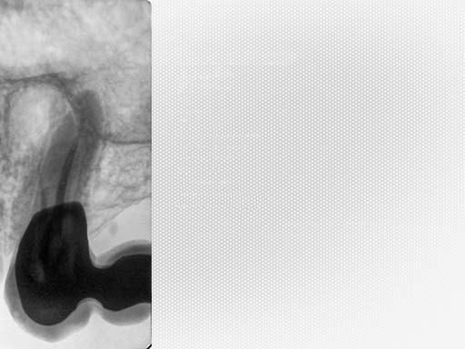
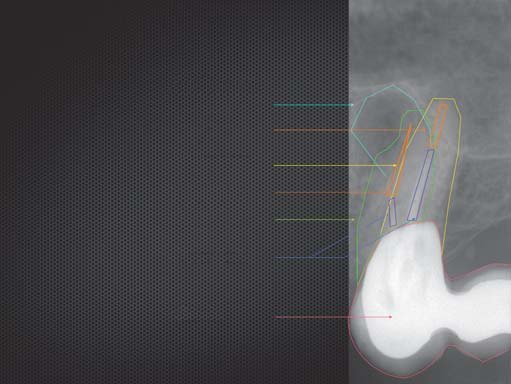
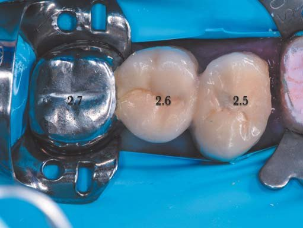
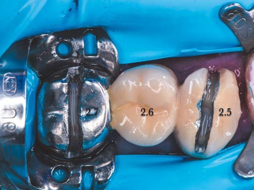
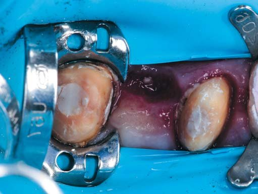
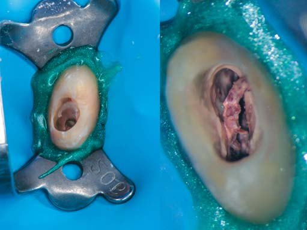
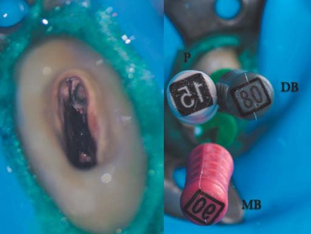
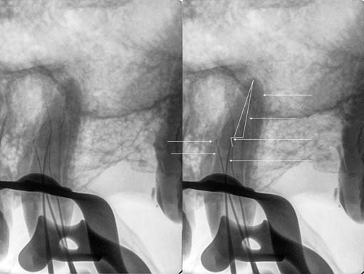
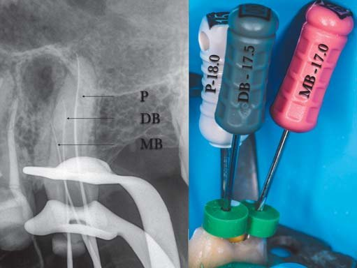
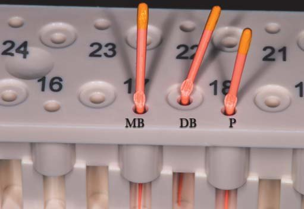
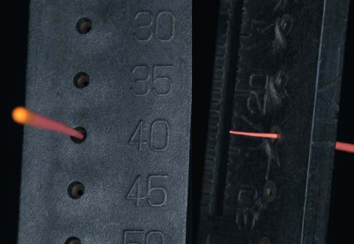
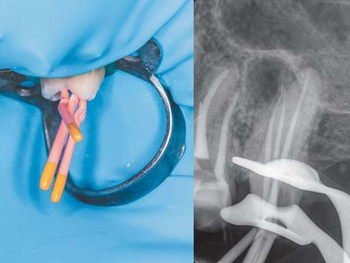
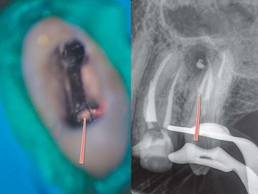
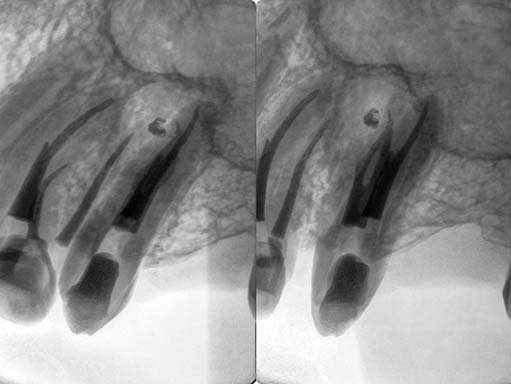
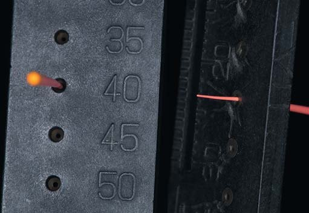
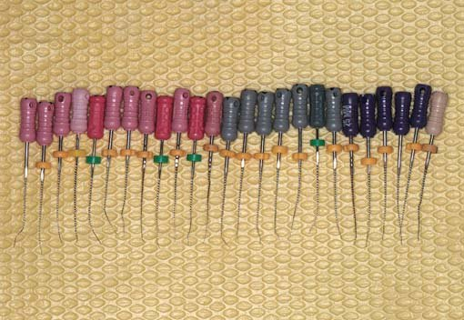
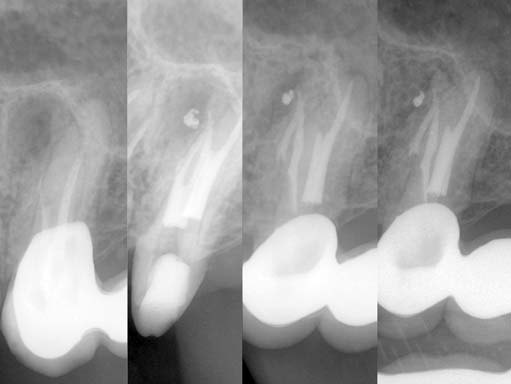
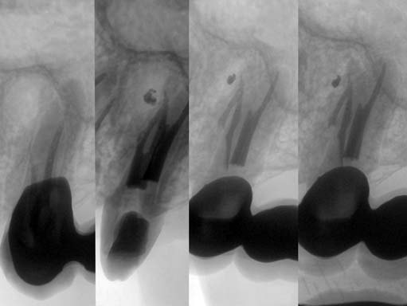
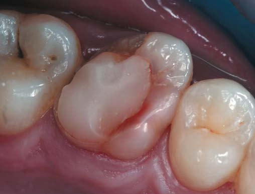
Через 8 місяців можна констатувати наявність процесу загоєння (Healing), спираючись на класифікацію прогнозування (Shimon Friedman),5 а висновки Dag Orstavik підтверджують, що в 90% випадків через 2 роки буде повне загоєння (Healed).6 Підтвердження на рентгенограмі (фото 18, 19).
Клінічний приклад 2
Пацієнта, 28 років, направили в нашу клініку з приводу можливого повторного ендодонтичного лікування зуба 26. Пацієнт скарг не мав, за винятком застрявання їжі між зубами 26 і 27. При клінічному огляді виявлено велику реставрацію, скол щічної стінки, вторинний каріозний процес (фото 1). Передопераційна інтраоральна рентгенограма зуба 26 (фото 2) візуалізувала неспроможну обтурацію кореневих каналів, фрагмент зламаного файла практично на всю робочу довжину дистально-щічного кореня (імовірно H-file), пропущену анатомію, внутріканальну резорбцію у медіально-щічному корені, радіолюцентне вогнище (фото 3).
Діагноз: асимптоматичний апікальний періодонтит зуба 26.
Лікування: Інфільтраційна анестезія 4% – 1/200000 Ubistezin (3M), ізоляція зуба 26 системою рабердам. Стару реставрацію та каріозне ураження видалили за допомогою кулястого бору з довгою ніжкою 6801L.314.016 (Komet) і підвищувального наконечника Ti-Max Z95L (NSK) під контролем операційного мікроскопа Zumax 2350 (Zumax Medical) і карієс-маркера Sable Seek (Ultradent) (фото 4).
Карта дна порожнини зуба здивувала кількістю пропущених анатомічних особливостей, поскільки обтураційний матеріал був лише у піднебінному кореневому каналі (силер на основі резорцин-формаліну), фрагмент зламаного файла виступав у порожнину зуба, що вже радувало, заглиблення, яке з'єднує дистально-щічний і піднебінний кореневі канали, наводило на думку про наявність другого дистально-щічного кореневого каналу (фото 5).
Після відновлення дистально-апроксимальної поверхні зуба 26 зроблено повітряно-абразивну обробку поверхні зуба за допомогою інтраорального наконечника DentoPrep Microblaster (Ronving), діаметр абразиву 50 мікрон, адгезивний протокол, для відновлення використали core-композит Build-It (Pentron) (фото 6).
Видалення інструмента: за допомогою ультразвукової насадки E1 (Woodpecker) у комбінації U-file (Mani) 20 розміру видалили залишки обтураційного матеріалу і пульпи навколо інструмента для створення простору для введення насадки при витягуванні. Узявши насадку для текучого композиту, на зовнішній поверхні вигину за допомогою кулястого бору зробили отвір. Підготовану таким чином насадку наділи на фрагментований інструмент і ввели у перфораційний отвір блокуючий файл H-file 30.02 (Dentsply Sirona), затиснувши тим самим інструмент у насадці. З другої спроби інструмент витягли (фото 7, 8).
У дистально-щічному кореневому каналі ідентифікували сходинку (Ledge), яку благополучно вдалося обійти через знайдений другий дистально-щічний кореневий канал підігнутими файлами C-pilots (VDW) 06.02-10.02. На момент першого проходження (scouting) було виявлено шість кореневих каналів: три в медіально-щічному корені, два в дистально-щічному і один – у піднебінному (фото 9, 10).
Препарування здійснювалося системою ProTaper Next (Dentsply Sirona) c рясною іригацією нагрітим 5,25% гіпохлоритом натрію Сholax (Cerkamed), для видалення змащеного шару використовували 17% розчин EDTA Endo-Solution (Cerkamed), на завершення етапу іригації система кореневих каналів промита дистильованою водою. Канали просушені паперовими пінами. Зуб 26 перед обтурацією мав класичну анатомію 4-канального моляра, поскільки в ході препарування обидва дистально-щічних кореневих канали з'єдналися в один, така ж ситуація склалася з першим і другим медіально-щічними кореневими каналами (фото 11).
Гаряча вертикальна конденсація за методом Шілдера і силер AH+ (Dentsply Sirona) були використані для обтурації кореневих каналів (фото 12, 13).
Через два роки ми отримали практично повне загоєння (Healed), знову ж таки спираючись на дані класифікації прогнозування (Shimon Friedman, 2003).5
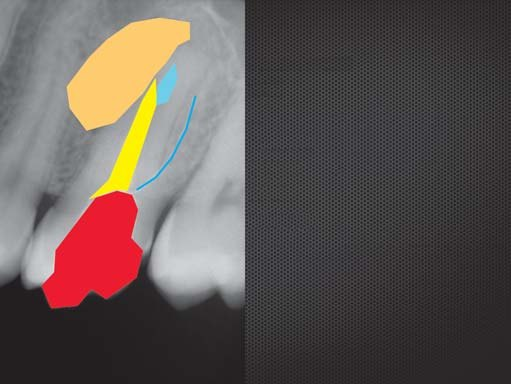
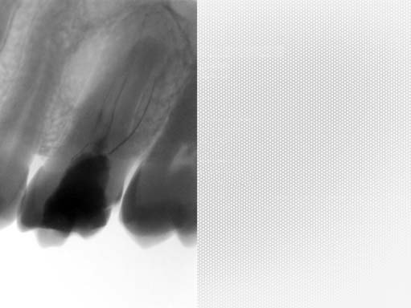
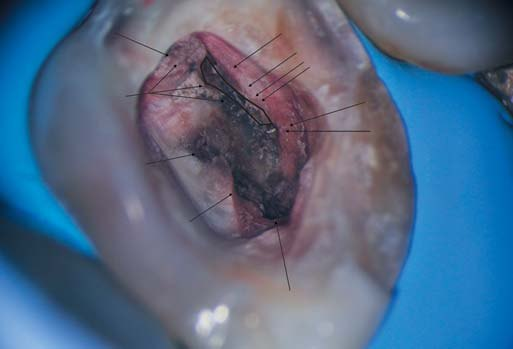
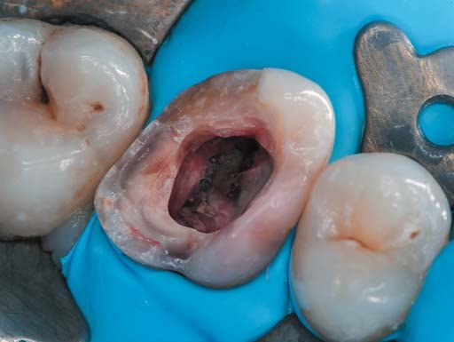
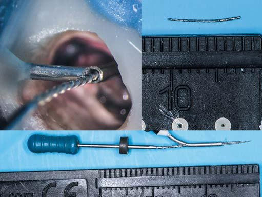
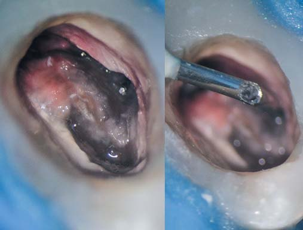
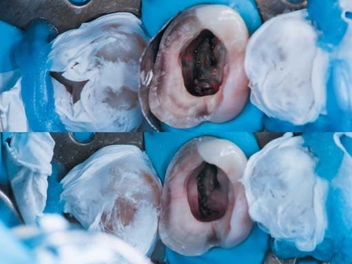
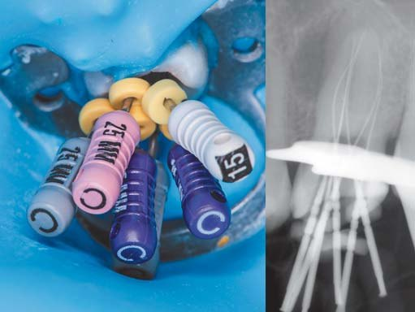
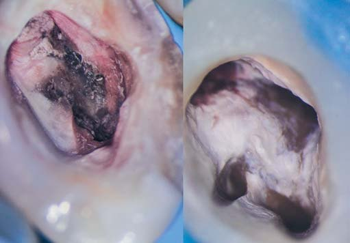
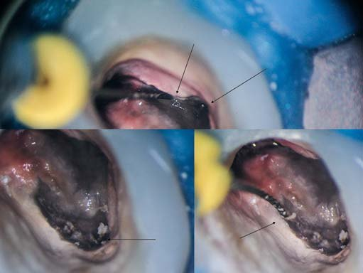
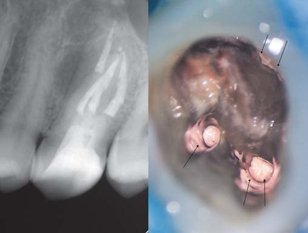
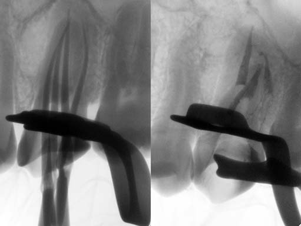
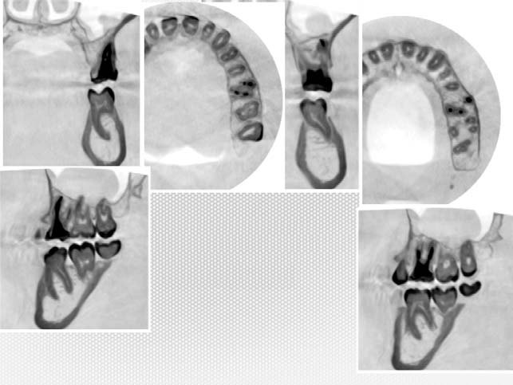
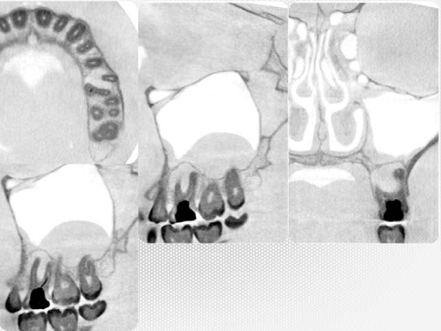
Замість висновку хочу процитувати Filippo Santarcangello, професора ендодонтії з Університету м. Падуї, Італія: «Ендодонтична практика – це щоденний виклик фахівцеві, якому потрібно знайти і обробити приховану й непередбачувану мікроанатомію. Тільки зрозумівши це, ми можемо взятися до лікування з належним смиренням, терпінням і наполегливістю».
Література
- Sieraski S. M., Taylor G. N., Kohn R. A. (1989). Identification and endodontic management of three-canalled maxillary premolars. Journal of Endodontics. 15:29-32.
- Sjogren U., Haggalund B., Sundquist G., Wing K. (1990). Factors affecting the long-term results of endodontic treatment. Journal of Endodontics. 16:498-504.
- Vertucci F. J., Seeling A., Gillis R. (1974). Root canal morphology of the human maxillary second premolars. Oral Surgery. 38:456-464.
- Vertucci F. J. (2005). Root canal morphology and its relationship to endodontic procedures. Endodontic Topics. 10:3-29.
- Friedman S., Abitbol S., Lawrence H. P. (2003). Treatment outcome in endodontics: the Toronto Study: initial treatment. Journal of Endodontics. 29(12), 787-793.
- Orstavik D., Kerekes K., Eriksen H. M. (1986). The periapical index: a scoring system for radiographic assessment of apical periodontitis. Dental Traumatology. 2(1), 20-34.